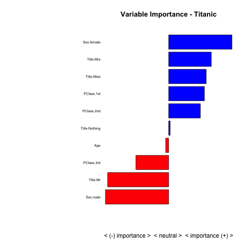

Quantifying the Spread: Measuring Strength and Direction of Predictors with the Summary Function
Practical walkthroughs on machine learning, data exploration and finding insight.
Resources
Packages Used in this Walkthrough
- {caret} - dummyVars function
- {ggplot2} - Graphics/Grammar of Graphics
- {grid} - Grid Graphics Package
You’re probably familiar within the summary() function in R. It’s an essential function, used all the time, that can reveal so much about your data. Yet, by extending it just a tad, we can quickly highlight top predictors, even on extremely large data sets.

The idea is not to summarize the variable in of itself, but to split the data into two sets, one for each outcome and summarize each. Comparing the results from both sets will tell you how well you predictor behaves towards your outcome variable. The above plots shows the summary of two predictors and their individual spreads - clearly, this first plot is a powerful predictor as the spread between the green and red line is large, while the second one isn’t.
Let’s first measure a single predictor to see how this works, then we’ll quantify this technique to it can be applied to entire data sets.
We’ll pull in the classic Titanic data set that I’ve already used in many of my walkthroughs. The code below will download the data from the University of Colorado, clean it up and yield a numeric-only, modeling-ready data frame:
# using dataset from the UCI Machine Learning Repository (http://archive.ics.uci.edu/ml/)
titanicDF <- read.csv('http://math.ucdenver.edu/RTutorial/titanic.txt',sep='\t')
# creating new title feature
titanicDF$Title <- ifelse(grepl('Mr ',titanicDF$Name),'Mr',ifelse(grepl('Mrs ',titanicDF$Name),'Mrs',ifelse(grepl('Miss',titanicDF$Name),'Miss','Nothing')))
titanicDF$Title <- as.factor(titanicDF$Title)
# impute age to remove NAs
titanicDF$Age[is.na(titanicDF$Age)] <- median(titanicDF$Age, na.rm=T)
# reorder data set so target is last column
titanicDF <- titanicDF[c('PClass', 'Age', 'Sex', 'Title', 'Survived')]
# binarize all factors
require(caret)
titanicDummy <- dummyVars("~.",data=titanicDF, fullRank=F)
titanicDF <- as.data.frame(predict(titanicDummy,titanicDF))
Let’s call head on our variables to see what we are dealing with. Survived is our outcome variable:
head(titanicDF, 3)
## PClass.1st PClass.2nd PClass.3rd Age Sex.female Sex.male Title.Miss
## 1 1 0 0 29 1 0 1
## 2 1 0 0 2 1 0 1
## 3 1 0 0 30 0 1 0
## Title.Mr Title.Mrs Title.Nothing Survived
## 1 0 0 0 1
## 2 0 0 0 0
## 3 1 0 0 0
Calling the summary function or the str function on an entire data frame is a great way of getting acquainted with it:
summary(titanicDF)
## PClass.1st PClass.2nd PClass.3rd Age
## Min. :0.000 Min. :0.000 Min. :0.000 Min. : 0.17
## 1st Qu.:0.000 1st Qu.:0.000 1st Qu.:0.000 1st Qu.:26.00
## Median :0.000 Median :0.000 Median :1.000 Median :28.00
## Mean :0.245 Mean :0.213 Mean :0.541 Mean :29.38
## 3rd Qu.:0.000 3rd Qu.:0.000 3rd Qu.:1.000 3rd Qu.:30.00
## Max. :1.000 Max. :1.000 Max. :1.000 Max. :71.00
## Sex.female Sex.male Title.Miss Title.Mr
## Min. :0.000 Min. :0.000 Min. :0.00 Min. :0.000
## 1st Qu.:0.000 1st Qu.:0.000 1st Qu.:0.00 1st Qu.:0.000
## Median :0.000 Median :1.000 Median :0.00 Median :1.000
## Mean :0.352 Mean :0.648 Mean :0.18 Mean :0.572
## 3rd Qu.:1.000 3rd Qu.:1.000 3rd Qu.:0.00 3rd Qu.:1.000
## Max. :1.000 Max. :1.000 Max. :1.00 Max. :1.000
## Title.Mrs Title.Nothing Survived
## Min. :0.000 Min. :0.000 Min. :0.000
## 1st Qu.:0.000 1st Qu.:0.000 1st Qu.:0.000
## Median :0.000 Median :0.000 Median :0.000
## Mean :0.152 Mean :0.096 Mean :0.343
## 3rd Qu.:0.000 3rd Qu.:0.000 3rd Qu.:1.000
## Max. :1.000 Max. :1.000 Max. :1.000
As you can see, this yields a version of the five-number summary displaying the min, max, 1st & 3rd quantile, mean, medium of each variable.
Though extremely useful, this doesn’t help us understand how our outcome variable interacts with its predictors. To remedy this, we split the data into two separate data sets, an outcome-positive data set, and an outcome-negative data set. Let’s look at Sex.female:
df_survived_1 <- subset(titanicDF, Survived==1)
df_survived_0 <- subset(titanicDF, Survived==0)
summary(df_survived_1$Sex.female)
## Min. 1st Qu. Median Mean 3rd Qu. Max.
## 0.000 0.000 1.000 0.684 1.000 1.000
summary(df_survived_0$Sex.female)
## Min. 1st Qu. Median Mean 3rd Qu. Max.
## 0.000 0.000 0.000 0.178 0.000 1.000
Now, a much clearer picture emerges regarding that variable when using an outcome-specific perspective. We learn that almost 70% of those that survived were females, and that only 18% of those that died were females. I think you can see where I am going with this.
Let’s see how we can graph this information in an intuitive way. The idea is to create a vector of summary information for both outcomes, overlaying them together and measuring the spread. We’ll continue with the Sex.female variable as it should already be apparent how strong of a predictor it is.
Sex.Female_0 <- (summary(df_survived_0$Sex.female))
Sex.Female_0 <- c(Sex.Female_0[1:6])
Sex.Female_1 <- (summary(df_survived_1$Sex.female))
Sex.Female_1 <- c(Sex.Female_1[1:6])
stats <- data.frame('ind'=c(1:6),
'Sex.Female_1'=Sex.Female_1,
'Sex.Female_0'=Sex.Female_0)
stats is the data frame holding the summary data for Sex.female for both outcomes. This data frame holds three variables, an index column, a predictor column where the outcome is positive and another where the outcome is negative, and 6 rows, one for each summary output:
head(stats,6)
## ind Sex.Female_1 Sex.Female_0
## Min. 1 0.000 0.000
## 1st Qu. 2 0.000 0.000
## Median 3 1.000 0.000
## Mean 4 0.684 0.178
## 3rd Qu. 5 1.000 0.000
## Max. 6 1.000 1.000
The logical next step is to plot it (that’s how the plots were generated in the start of the walkthrough):
require(ggplot2)
p <- ggplot(data=stats, aes(ind)) +
geom_line(aes(y = Sex.Female_1, colour = "Sex.Female_1")) +
geom_line(aes(y = Sex.Female_0, colour = "Sex.Female_0")) +
scale_x_discrete(breaks = 1:6,
labels=c("min","1q","median","mean","3q","max"))
p

Obviously, we’re going to generalize this into a neat function, but, by doing it by hand for a single variable you should start seeing the power of looking at summary data is such manner. By using ggplot2, it is easy to display the summary measures on the x axis. The green line represents the females that survived and the red one, those that didn’t. As you can see both lines are far apart, the green line is well above the red one, and this means that the variable is a powerful predictor for survivability (i.e. we have a positive spread).
If we generalize this spread into a single number, we’ll be able to bypass the graphing phase and apply this to huge data sets.
spread <- ((Sex.Female_1[[1]] - Sex.Female_0[[1]]) +
(Sex.Female_1[[2]] - Sex.Female_0[[2]]) +
(Sex.Female_1[[3]] - Sex.Female_0[[3]]) +
(Sex.Female_1[[4]] - Sex.Female_0[[4]]) +
(Sex.Female_1[[5]] - Sex.Female_0[[5]]) +
(Sex.Female_1[[6]] - Sex.Female_0[[6]]))
print(spread)
## [1] 2.506
2.56 is a large spread, let’s compare it with the weaker variable Title.Nothing:
Title.Nothing_0 <- (summary(df_survived_0$Title.Nothing))
Title.Nothing_0 <- c(Title.Nothing_0[1:6])
Title.Nothing_1 <- (summary(df_survived_1$Title.Nothing))
Title.Nothing_1 <- c(Title.Nothing_1[1:6])
stats <- data.frame('ind'=c(1:6), 'stats1'=Title.Nothing_1,'stats0'=Title.Nothing_0)
spread <- ((Title.Nothing_1[[1]] - Title.Nothing_0[[1]]) +
(Title.Nothing_1[[2]] - Title.Nothing_0[[2]]) +
(Title.Nothing_1[[3]] - Title.Nothing_0[[3]]) +
(Title.Nothing_1[[4]] - Title.Nothing_0[[4]]) +
(Title.Nothing_1[[5]] - Title.Nothing_0[[5]]) +
(Title.Nothing_1[[6]] - Title.Nothing_0[[6]]))
print(spread)
## [1] 0.0366
There you go, 0.0366 is a much smaller spread than 2.56! This quantative value will allow us to cycle through any number of variables without having to plot them individually:
p <- ggplot(data=stats, aes(ind)) +
geom_line(aes(y = stats1, colour = "stats1")) +
geom_line(aes(y = stats0, colour = "stats0")) +
scale_x_discrete(breaks = 1:6,
labels=c("min","1q","median","mean","3q","max")) +
ylab('Title.Nothing') + xlab(paste('Spread:',spread))
p

Let’s Generalize
It is time to generalize all this so we don’t have to tediously type each variable name every time we want to measure these relationships.
We’ll create a function called GetSummaryAndPlots(). It takes a scaled data set of each outcome, the predictorName variable, and whether we want it to be plotted. If we don’t want it plotted, it will return the spread value:
GetSummaryPlot <- function(objdfscaled0, objdfscaled1, predictorName, plotit=TRUE) {
require(ggplot2)
stats0 <- (summary(objdfscaled0[,predictorName]))
stats0 <- c(stats0[1:6])
stats1 <- (summary(objdfscaled1[,predictorName]))
stats1 <- c(stats1[1:6])
stats <- data.frame('ind'=c(1:6), 'stats1'=stats1,'stats0'=stats0)
spread <- ((stats1[[1]] - stats0[[1]]) +
(stats1[[2]] - stats0[[2]]) +
(stats1[[3]] - stats0[[3]]) +
(stats1[[4]] - stats0[[4]]) +
(stats1[[5]] - stats0[[5]]) +
(stats1[[6]] - stats0[[6]]))
if (plotit) {
print(paste('Scaled spread:',spread))
p <- ggplot(data=stats, aes(ind)) +
geom_line(aes(y = stats1, colour = "stats1")) +
geom_line(aes(y = stats0, colour = "stats0")) +
scale_x_discrete(breaks = 1:6,
labels=c("min","1q","median","mean","3q","max")) +
ylab(predictorName) + xlab(paste('Spread:',spread))
return (p)
} else {
return (spread)
}
}
Let’s look at another piece of code that will allow us to generalize this further. By using the scale function and scaling the entire data set into a standard unit of measurement, we can easily compare the spread between each predictor. Let’s give it a whirl on the entire data set…
outcomeName <- 'Survived'
predictorNames <- names(titanicDF)[!names(titanicDF) %in% outcomeName]
# Temporarily remove the outcome variable before scaling the data set
outcomeValue <- titanicDF$Survived
# scale returns a matrix so we need to tranform it back to a data frame
scaled_titanicDF <- as.data.frame(scale(titanicDF))
scaled_titanicDF$Survived <- outcomeValue
# split your data sets
scaled_titanicDF_0 <- scaled_titanicDF[scaled_titanicDF[,outcomeName]==0,]
scaled_titanicDF_1 <- scaled_titanicDF[scaled_titanicDF[,outcomeName]==1,]
for (predictorName in predictorNames)
print(paste(predictorName,':',GetSummaryPlot(scaled_titanicDF_0,
scaled_titanicDF_1, predictorName, plotit=FALSE)))
## [1] "PClass.1st : 2.969"
## [1] "PClass.2nd : 2.6301"
## [1] "PClass.3rd : -2.727"
## [1] "Age : -0.2498"
## [1] "Sex.female : 5.253"
## [1] "Sex.male : -5.253"
## [1] "Title.Miss : 3.119"
## [1] "Title.Mr : -5.071"
## [1] "Title.Mrs : 3.54"
## [1] "Title.Nothing : 0.1241"
Pretty cool, right? With a quick glance we see that Sex.male and Title.Mr have a substantial negative effect on survivability while Sex.female has a substantial positive.
How about plotting this efficiently? We’ll use the multiplot function from the great resource: Cookbook for R. This enables the stacking of multiple ggplots on the same page, just like par and mfrow does for regular R plots. For more information, please visit the above link.
multiplot <- function(..., plotlist=NULL, file, cols=1, layout=NULL) {
#http://www.cookbook-r.com/Graphs/Multiple_graphs_on_one_page_(ggplot2)/
# Multiple plot function
#
# ggplot objects can be passed in ..., or to plotlist (as a list of ggplot objects)
# - cols: Number of columns in layout
# - layout: A matrix specifying the layout. If present, 'cols' is ignored.
#
# If the layout is something like matrix(c(1,2,3,3), nrow=2, byrow=TRUE),
# then plot 1 will go in the upper left, 2 will go in the upper right, and
# 3 will go all the way across the bottom.
#
require(grid)
# Make a list from the ... arguments and plotlist
plots <- c(list(...), plotlist)
numPlots = length(plots)
# If layout is NULL, then use 'cols' to determine layout
if (is.null(layout)) {
# Make the panel
# ncol: Number of columns of plots
# nrow: Number of rows needed, calculated from # of cols
layout <- matrix(seq(1, cols * ceiling(numPlots/cols)),
ncol = cols, nrow = ceiling(numPlots/cols))
}
if (numPlots==1) {
print(plots[[1]])
} else {
# Set up the page
grid.newpage()
pushViewport(viewport(layout = grid.layout(nrow(layout), ncol(layout))))
# Make each plot, in the correct location
for (i in 1:numPlots) {
# Get the i,j matrix positions of the regions that contain this subplot
matchidx <- as.data.frame(which(layout == i, arr.ind = TRUE))
print(plots[[i]], vp = viewport(layout.pos.row = matchidx$row,
layout.pos.col = matchidx$col))
}
}
}
Now, let’s plot the 4 strongest positive predictors for survivability and the 4 strongest negative ones:
p1 <- GetSummaryPlot(scaled_titanicDF_0, scaled_titanicDF_1, 'Sex.female', plotit=TRUE)
## [1] "Scaled spread: 5.253"
p2 <- GetSummaryPlot(scaled_titanicDF_0, scaled_titanicDF_1, 'Title.Mrs', plotit=TRUE)
## [1] "Scaled spread: 3.54"
p3 <- GetSummaryPlot(scaled_titanicDF_0, scaled_titanicDF_1, 'Sex.male', plotit=TRUE)
## [1] "Scaled spread: -5.253"
p4 <- GetSummaryPlot(scaled_titanicDF_0, scaled_titanicDF_1, 'Title.Mr', plotit=TRUE)
## [1] "Scaled spread: -5.071"
multiplot(p1,p2,p3,p4,cols=2)

And now for the final capper, let’s plot everything on a bar graph so we can easily compare the strongest predictors and the direction they affect the model:
summaryImportance <- c()
variableName <- c()
for (predictorName in predictorNames) {
summaryImportance <- c(summaryImportance, GetSummaryPlot(scaled_titanicDF_0, scaled_titanicDF_1, predictorName, plotit=FALSE))
variableName <- c(variableName, predictorName)
}
results <- data.frame('VariableName'=variableName, 'Weight'=summaryImportance)
# display variable importance on a +/- scale
results <- results[order(results$Weight),]
results <- results[(results$Weight != 0),]
par(mar=c(5,15,4,2)) # increase y-axis margin.
xx <- barplot(results$Weight, width = 0.85,
main = paste("Variable Importance - Titanic"), horiz = T,
xlab = "< (-) importance > < neutral > < importance (+) >", axes = FALSE,
col = ifelse((results$Weight > 0), 'blue', 'red'))
axis(2, at=xx, labels=results$VariableName, tick=FALSE, las=2, line=-0.3, cex.axis=0.6)

Conclusion
This approach only works when attempting to predict a binary outcome and won’t work for continuous outcomes (such as linear regression models). Also, it is a naive-based variable importance calculator as it doesn’t account for interactions between predictors. Yet, it is a fast way to size up data for any supervised modeling and should handle extremely large dimensions. Happy explorations!
Full source code (also on GitHub):
# using dataset from the UCI Machine Learning Repository (http://archive.ics.uci.edu/ml/)
titanicDF <- read.csv('http://math.ucdenver.edu/RTutorial/titanic.txt',sep='\t')
# creating new title feature
titanicDF$Title <- ifelse(grepl('Mr ',titanicDF$Name),'Mr',ifelse(grepl('Mrs ',titanicDF$Name),'Mrs',ifelse(grepl('Miss',titanicDF$Name),'Miss','Nothing')))
titanicDF$Title <- as.factor(titanicDF$Title)
# impute age to remove NAs
titanicDF$Age[is.na(titanicDF$Age)] <- median(titanicDF$Age, na.rm=T)
# reorder data set so target is last column
titanicDF <- titanicDF[c('PClass', 'Age', 'Sex', 'Title', 'Survived')]
# binarize all factors
require(caret)
titanicDummy <- dummyVars("~.",data=titanicDF, fullRank=F)
titanicDF <- as.data.frame(predict(titanicDummy,titanicDF))
head(titanicDF, 3)
summary(titanicDF)
df_survived_1 <- subset(titanicDF, Survived==1)
df_survived_0 <- subset(titanicDF, Survived==0)
summary(df_survived_1$Sex.female)
summary(df_survived_0$Sex.female)
Sex.Female_0 <- (summary(df_survived_0$Sex.female))
Sex.Female_0 <- c(Sex.Female_0[1:6])
Sex.Female_1 <- (summary(df_survived_1$Sex.female))
Sex.Female_1 <- c(Sex.Female_1[1:6])
stats <- data.frame('ind'=c(1:6),
'Sex.Female_1'=Sex.Female_1,
'Sex.Female_0'=Sex.Female_0)
head(stats,6)
# plot Sex.Female predictor
require(ggplot2)
p <- ggplot(data=stats, aes(ind)) +
geom_line(aes(y = Sex.Female_1, colour = "Sex.Female_1")) +
geom_line(aes(y = Sex.Female_0, colour = "Sex.Female_0")) +
scale_x_discrete(breaks = 1:6,
labels=c("min","1q","median","mean","3q","max"))
p
# calculate predictor's spread value
spread <- ((Sex.Female_1[[1]] - Sex.Female_0[[1]]) +
(Sex.Female_1[[2]] - Sex.Female_0[[2]]) +
(Sex.Female_1[[3]] - Sex.Female_0[[3]]) +
(Sex.Female_1[[4]] - Sex.Female_0[[4]]) +
(Sex.Female_1[[5]] - Sex.Female_0[[5]]) +
(Sex.Female_1[[6]] - Sex.Female_0[[6]]))
print(spread)
# do the same thing for predictor Title.Nothing
Title.Nothing_0 <- (summary(df_survived_0$Title.Nothing))
Title.Nothing_0 <- c(Title.Nothing_0[1:6])
Title.Nothing_1 <- (summary(df_survived_1$Title.Nothing))
Title.Nothing_1 <- c(Title.Nothing_1[1:6])
stats <- data.frame('ind'=c(1:6), 'stats1'=Title.Nothing_1,'stats0'=Title.Nothing_0)
spread <- ((Title.Nothing_1[[1]] - Title.Nothing_0[[1]]) +
(Title.Nothing_1[[2]] - Title.Nothing_0[[2]]) +
(Title.Nothing_1[[3]] - Title.Nothing_0[[3]]) +
(Title.Nothing_1[[4]] - Title.Nothing_0[[4]]) +
(Title.Nothing_1[[5]] - Title.Nothing_0[[5]]) +
(Title.Nothing_1[[6]] - Title.Nothing_0[[6]]))
print(spread)
p <- ggplot(data=stats, aes(ind)) +
geom_line(aes(y = stats1, colour = "stats1")) +
geom_line(aes(y = stats0, colour = "stats0")) +
scale_x_discrete(breaks = 1:6,
labels=c("min","1q","median","mean","3q","max")) +
ylab('Title.Nothing') + xlab(paste('Spread:',spread))
p
# generalize this in a handy function
GetSummaryPlot <- function(objdfscaled0, objdfscaled1, predictorName, plotit=TRUE) {
require(ggplot2)
stats0 <- (summary(objdfscaled0[,predictorName]))
stats0 <- c(stats0[1:6])
stats1 <- (summary(objdfscaled1[,predictorName]))
stats1 <- c(stats1[1:6])
stats <- data.frame('ind'=c(1:6), 'stats1'=stats1,'stats0'=stats0)
spread <- ((stats1[[1]] - stats0[[1]]) +
(stats1[[2]] - stats0[[2]]) +
(stats1[[3]] - stats0[[3]]) +
(stats1[[4]] - stats0[[4]]) +
(stats1[[5]] - stats0[[5]]) +
(stats1[[6]] - stats0[[6]]))
if (plotit) {
# returns a ggplot
print(paste('Scaled spread:',spread))
p <- ggplot(data=stats, aes(ind)) +
geom_line(aes(y = stats1, colour = "stats1")) +
geom_line(aes(y = stats0, colour = "stats0")) +
scale_x_discrete(breaks = 1:6,
labels=c("min","1q","median","mean","3q","max")) +
ylab(predictorName) + xlab(paste('Spread:',spread))
return (p)
} else {
# only returns spread final value
return (spread)
}
}
outcomeName <- 'Survived'
predictorNames <- names(titanicDF)[!names(titanicDF) %in% outcomeName]
# Temporarily remove the outcome variable before scaling the data set
outcomeValue <- titanicDF$Survived
# scale returns a matrix so we need to tranform it back to a data frame
scaled_titanicDF <- as.data.frame(scale(titanicDF))
scaled_titanicDF$Survived <- outcomeValue
# split your data sets
scaled_titanicDF_0 <- scaled_titanicDF[scaled_titanicDF[,outcomeName]==0,]
scaled_titanicDF_1 <- scaled_titanicDF[scaled_titanicDF[,outcomeName]==1,]
for (predictorName in predictorNames)
print(paste(predictorName,':',GetSummaryPlot(scaled_titanicDF_0,
scaled_titanicDF_1, predictorName, plotit=FALSE)))
multiplot <- function(..., plotlist=NULL, file, cols=1, layout=NULL) {
#http://www.cookbook-r.com/Graphs/Multiple_graphs_on_one_page_(ggplot2)/
# Multiple plot function
#
# ggplot objects can be passed in ..., or to plotlist (as a list of ggplot objects)
# - cols: Number of columns in layout
# - layout: A matrix specifying the layout. If present, 'cols' is ignored.
#
# If the layout is something like matrix(c(1,2,3,3), nrow=2, byrow=TRUE),
# then plot 1 will go in the upper left, 2 will go in the upper right, and
# 3 will go all the way across the bottom.
#
require(grid)
# Make a list from the ... arguments and plotlist
plots <- c(list(...), plotlist)
numPlots = length(plots)
# If layout is NULL, then use 'cols' to determine layout
if (is.null(layout)) {
# Make the panel
# ncol: Number of columns of plots
# nrow: Number of rows needed, calculated from # of cols
layout <- matrix(seq(1, cols * ceiling(numPlots/cols)),
ncol = cols, nrow = ceiling(numPlots/cols))
}
if (numPlots==1) {
print(plots[[1]])
} else {
# Set up the page
grid.newpage()
pushViewport(viewport(layout = grid.layout(nrow(layout), ncol(layout))))
# Make each plot, in the correct location
for (i in 1:numPlots) {
# Get the i,j matrix positions of the regions that contain this subplot
matchidx <- as.data.frame(which(layout == i, arr.ind = TRUE))
print(plots[[i]], vp = viewport(layout.pos.row = matchidx$row,
layout.pos.col = matchidx$col))
}
}
}
p1 <- GetSummaryPlot(scaled_titanicDF_0, scaled_titanicDF_1, 'Sex.female', plotit=TRUE)
p2 <- GetSummaryPlot(scaled_titanicDF_0, scaled_titanicDF_1, 'Title.Mrs', plotit=TRUE)
p3 <- GetSummaryPlot(scaled_titanicDF_0, scaled_titanicDF_1, 'Sex.male', plotit=TRUE)
p4 <- GetSummaryPlot(scaled_titanicDF_0, scaled_titanicDF_1, 'Title.Mr', plotit=TRUE)
multiplot(p1,p2,p3,p4,cols=2)
summaryImportance <- c()
variableName <- c()
for (predictorName in predictorNames) {
summaryImportance <- c(summaryImportance, GetSummaryPlot(scaled_titanicDF_0, scaled_titanicDF_1, predictorName, plotit=FALSE))
variableName <- c(variableName, predictorName)
}
results <- data.frame('VariableName'=variableName, 'Weight'=summaryImportance)
# display variable importance on a +/- scale
results <- results[order(results$Weight),]
results <- results[(results$Weight != 0),]
par(mar=c(5,15,4,2)) # increase y-axis margin.
xx <- barplot(results$Weight, width = 0.85,
main = paste("Variable Importance - Titanic"), horiz = T,
xlab = "< (-) importance > < neutral > < importance (+) >", axes = FALSE,
col = ifelse((results$Weight > 0), 'blue', 'red'))
axis(2, at=xx, labels=results$VariableName, tick=FALSE, las=2, line=-0.3, cex.axis=0.6)